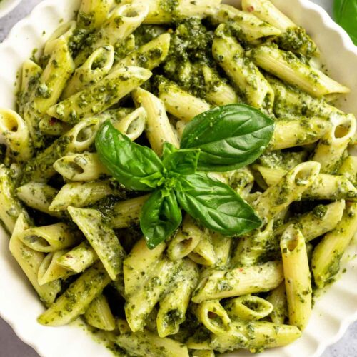

Magherita Pizza: Where do I begin about this beauty? This was the first pizza I made with my wife [Honorable Mention]. Made with a thin crust and with a combination of 3 different types of cheese, and the overdose of peppeorni, it just makes you go Mama Mia.
Pesto Pasta: This dish was where it all started - my love for Italian Food. Ever since devouring this amazing and moist pasta, Italian Food has become the main source of happiness for Odin's and my tummy. Incrediblé!

Spaghetti Bolognese: This is the favourite dish I love from Odin. This dish takes number 1 spot in the Italian Gourmet Odin has ever created. And why is this so? Because it was made with; a whole lotta love.